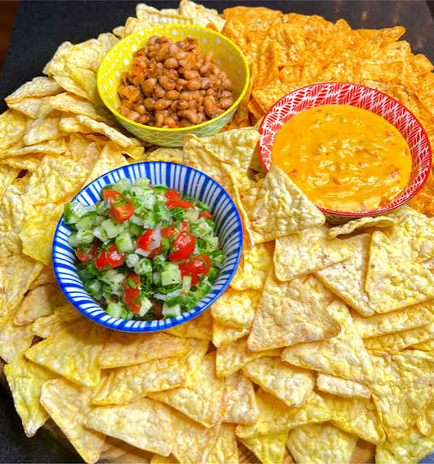

<!DOCTYPE html>
<html>
<head>
  <title>Types Of Nachos</title>
<link rel="stylesheet" href="styles.css">
</head>
<body>
</body>
</html>
<nav>
    <a href="index.html">Nachos</a>
    <a href="page2.html">The History Of Nachos</a>
    <a href="page3.html">Types Of Nachos</a>
    <a href="page4.html">How Cheese Is Made</a>
    <a href="page5.html">How Tortillas Are Made</a>
    <a href="page6.html">Guacamole Nachos</a>
    <a href="page7.html">Pico De pollo nachos</a>
    <a href="page8.html">Conclusion/Works Cited</a>
</nav>
<h>Types of Nachos</h>
<p>There are many different types of nachos, each with their own unique flavors and ingredients.</p>
  